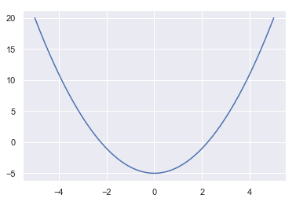
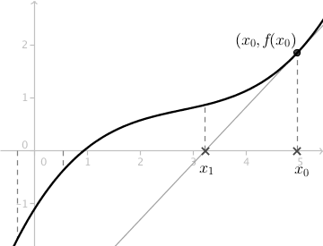
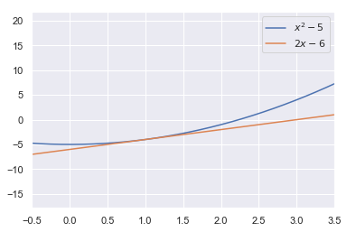
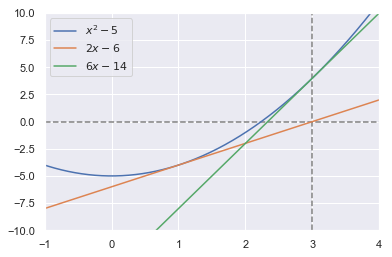
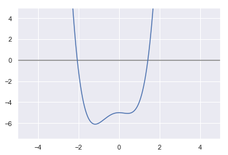
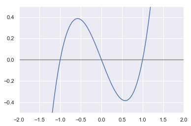
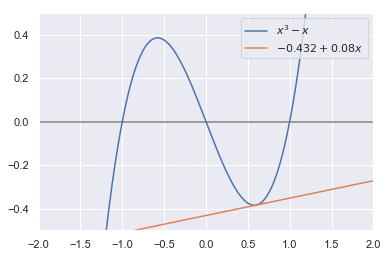

Método de Newton
O Método de Newton é um conhecido algoritmo para chegar a soluções númericas de uma equação, normalmente uma para a qual a solução não é tão trivial. Por exemplo, imagine que queiramos encontrar encontrar a raiz da função quadrática \( x = \sqrt{5} \Rightarrow x^2 = 5 \Rightarrow x^2 - 5 = 0 \). Como poderíamos fazer isso?
Newton criou um método (verdadeiramente um algoritmo) extraordinariamente eficiente para chegar à solução, em que se faz uso de seus estudos em cálculo diferencial.
Calcular \( \sqrt{5} \), hoje em dia, é trivial, basta qualquer calculadora. Mas, como será que a calculadora faz esse cálculo? Talvez seja esse o algoritmo que ela mesma usa. Vamos entender como isso funciona então.
Para melhor entendimento do problema, vejamos o gráfico da função antes.
%matplotlib inline
import matplotlib.pyplot as plt
import seaborn as sns
import numpy as np
sns.set()
def f(x): return x**2 - 5
X = np.linspace(-5, 5, 500)
plt.plot(X, f(X))

Podemos verificar que ela intercepta o eixo x quando \( x \) é um pouquinho acima de 2, quer dizer, quando \( x = \sqrt{5} \approx 2.23 \).
Ok, mas como chegamos até ali com cálculo diferencial? O raciocínio é como segue: vamos fazer uma estimativa inicial, um valor que achamos que seja próximo da solução. Por exemplo, 1.
Com esse valor, a ideia é obter a reta tangente àquele ponto, o que é algo muito mais fácil de lidar. E, para isso, é claro que precisamos calcular \( f^{'}(1) \), a inclinação dessa reta naquele ponto.
E, com ela em mãos, queremos achar onde essa reta intercepta o eixo x, e este deve ser um ponto mais próximo da raiz, mas não exatamente a raiz. Isto porque estamos calculando a raiz de uma reta pra nos aproximarmos da raiz de uma parábola, que não é linear, é claro.

Até então, o método não parece tão impressionante. Mas e se fizermos isso de novo, usando como estimativa a raiz dessa reta? Acontece que se repetirmos esse processo algumas vezes mais podemos chegar numa estimativa muito próxima da solução.
Aproximação Linear #
Esse uso da reta tangente é o que se conhece por aproximação linear. Por exemplo, retomando a função quadrática. A derivada dela é obtida pela regra da potência, \( \frac{d(x^2)}{dx} = 2x \). Já a equação da tangente é obtida simplesmente da equação de uma reta:
$$ \Delta y = f'(x)\Delta x \ (y - y_0) = f'(x_0)(x - x_0) \ y = y_0 + m(x - x_0) $$
No nosso caso, queremos achar a reta tangente quando \( x_0 = 1 \), sendo \( f(x_0) = x^2 - 5 = 1 - 5 = -4 \). Logo, a reta que tangencia o ponto \( (1, -4) \) é:
$$ y = y_0 + 2x(x - x_0) \ y = -4 + 2\cdot 1(x - 1) \ y = -4 + 2x -2 \ y = 2x - 6 $$
Mas, é crucial perceber que essa é a equação da reta tangente ao ponto \( (x_0, y_0) \) da função f(x). Então, o que realmente podemos alegar é que, para um dado número \( a \), o valor de \( f(a) \approx y(a) \), quando \( a \approx x_0 \): a reta tangente a um dado ponto de uma função é muito próxima da própria função para valores não muito distantes do ponto.
$$ f(a) \approx y_0 + m(a - x_0) $$
No gráfico abaixo isso pode ser melhor visualizado. Perceba que para valores próximos de 1, a reta tangente está bem próxima da parábola, mas vai ficando cada vez mais distante quando x se afasta de 1. E é esse o sentido de uma aproximação linear.
def tang(x):
return 2 * x - 6
plt.plot(X, f(X), label=r"$x^2 - 5$")
plt.plot(X, tang(X), label=r"$2x - 6$")
plt.xlim(-0.5, 3.5)
plt.legend()

Nesse zoom, também podemos ver que a reta tangente ao ponto \( (1, -4) \) cruza o eixo \( x \) um pouco mais adiante de \( 2.23 \). Mais especificamente, quando \( 2x - 6 = 0 \Rightarrow 2x = 6 \Rightarrow x = 3 \).
O que é um pouco mais próximo da raiz do que a estimativa inicial 1. E é exatamente nisso que consiste o Método de Newton, em se aproximar cada vez mais da raiz de \( f(x) \) usando a reta que tangencia um dado ponto desta função.
Assim, nosso objetivo fica melhor delineado dessa forma: queremos sempre o valor de \( x \) da reta tangente a um ponto \( (x_0, y_0) \) que faz com que \( y = 0 \):
$$ y - y_0 = m(x - x_0) \text{ dividindo tudo por m e sumindo com o y: } \newline \frac{y_0}{m} = x - x_0 \Rightarrow x = x_0 - \frac{y_0}{m} \newline \text{ o que também pode ser escrito como: } \newline x = x_0 - \frac{f(x_0)}{f'(x_0)} \Rightarrow x_{n+1} = x_n - \frac{f(x_n)}{f'(x_n)} \newline $$
Plugando os valores de nossa estimativa inicial, obtemos:
$$ x = 1 - \frac{1^2 - 5}{2\cdot1} = 1 - \frac{-4}{2} = 1 - (-2) = 3 $$
E a ideia é usarmos o 3 como um novo \( x_0 \), e com ele calcularmos uma nova estimativa para a raiz com a reta que tangencia \( (3, 4) \).
$$ x = 3 - \frac{3^2 - 5}{2\cdot3} = 3 - \frac{4}{6} = 3 - \frac{2}{3} \approx 2.333 $$
O que já é uma ótima aproximação de \( \sqrt{5} \). Abaixo um gráfico do que mais ou menos aconteceu. A função laranja é a tangente ao ponto \( (1, -4) \), e a verde ao ponto \( (3, 4) \). Veja como o intercepto-x da tangente a este último ponto é próximo da raiz da parábola.
def f(x):
return x ** 2 - 5
def tangente_um(x):
return 2 * x - 6
def tangente_dois(x):
return 6 * x - 14
X = np.linspace(-5, 5, 1000)
plt.plot(X, f(X), label=r"$x^2 - 5$")
plt.plot(X, tangente_um(X), label=r"$2x - 6$")
plt.plot(X, tangente_dois(X), label=r"$6x - 14$")
plt.hlines(0, -1, 4, "grey", "dashed")
plt.vlines(3, -10, 10, "grey", "dashed")
plt.xlim(-1, 4)
plt.ylim(-10, 10)
plt.legend()

Seria interessante escrevermos uma função para fazer esses cálculos, e ela inevitavelmente teria lidar com cálculo diferencial. Para isso, existe uma biblioteca que pode nos ajudar.
Introduzindo SymPy #
Essa biblioteca fornece suporte para trabalhar com álgebra simbólica. Nela contamos com funções para calcular limites, derivadas, integrais, expandir polinômicos, simplificar expressões etc.
Por exemplo, se quisermos calcular a derivada da função \( x^2 - 5 \).
from sympy import symbols, diff, limit, integrate, oo
x = symbols("x")
diff(x ** 2 - 5)
2*x
Podemos também calcular limites, por exemplo \( \lim_{x \to \infty} \frac{1}{x} = 0 \)
limit(1 / x, x, oo)
0
Ou mesmo integrais indefinidas, \( \int x^2 , dx = \frac{x^3}{3} + c \)
integrate(x ** 2)
x**3/3
A função assim como está não serve para retornar qualquer valor, ela
praticamente só aceita funções do próprio SymPy. Para a utilizarmos como uma
função qualquer, devemos usar lambdify(). Para nossos objetivos, essa última e
a função diff serão suficientes.
Um código para o algoritmo #
Antes de apresentar a função em si, melhor explicar como eu a pensei.
Primeiramente, ela tomará três argumentos: a função, o valor para o qual queremos uma solução, e a estimativa inicial. Por exemplo, no nosso caso, ela tomaria os argumentos \( x^2 \), \( 5 \) e \( 1 \).
Em seguida, construirei simbolicamente, com estes argumentos, nossa \( f(x) \) e sua derivada, \( f'(x) \). E com isso temos tudo que precisamos para executarmos o método.
No algoritmo, decidi por 5 iterações, printando três colunas com os resultados a cada iteração: a estimativa inicial, a nova estimativa e, por fim, a diferença entre as duas, a fim de verificar como a cada iteração o valor de x se aproxima mais do da raiz.
from sympy.utilities.lambdify import lambdify
def newton(funcao, numero, estimativa):
f = lambdify(x, funcao - numero) # x^2 - 5
df = lambdify(x, diff(funcao - numero)) # 2x
print("est. | nova est. | diferença")
for _ in range(5):
nova_est = estimativa - f(estimativa) / df(estimativa)
print(
f"{estimativa:.5f} | {nova_est:^ 9.5f} | {abs(nova_est - estimativa):.20f}"
)
estimativa = nova_est
return estimativa
print(f"\nO quanto erramos: {abs(np.sqrt(5) - newton(x**2, 5, 1))}")
est. | nova est. | diferença
1.00000 | 3.00000 | 2.00000000000000000000
3.00000 | 2.33333 | 0.66666666666666651864
2.33333 | 2.23810 | 0.09523809523809534383
2.23810 | 2.23607 | 0.00202634245187471862
2.23607 | 2.23607 | 0.00000091814338532004
O quanto erramos: 1.8829382497642655e-13
E assim vemos que o erro foi desprezível.
A vantagem de usar o SymPy é que agora podemos estimar a raiz de qualquer tipo de função. Por exemplo, a raiz cúbica de 5, ou algo mais complicado:
print(f"\nO quanto erramos: {abs(5**(1/3) - newton(x**3, 5, 2))}")
est. | nova est. | diferença
2.00000 | 1.75000 | 0.25000000000000000000
1.75000 | 1.71088 | 0.03911564625850338928
1.71088 | 1.70998 | 0.00090792482452184409
1.70998 | 1.70998 | 0.00000048224014181919
1.70998 | 1.70998 | 0.00000000000013589130
O quanto erramos: 2.220446049250313e-16
Uma das raízes para função \( x^4 + x^3 - x^2 - 5 \) deve ser:
newton(x ** 4 + x ** 3 - x ** 2, 5, 1)
est. | nova est. | diferença
1.00000 | 1.80000 | 0.80000000000000004441
1.80000 | 1.52529 | 0.27470795979353446192
1.52529 | 1.43509 | 0.09020236587892971336
1.43509 | 1.42600 | 0.00908943849525978287
1.42600 | 1.42591 | 0.00008681126625442737
1.4259134245660217
Se plotarmos seu gráfico, veremos que esse é um valor razoável. Uma raiz parece estar entre 1 e 2, e foi a que achamos. E uma outra está muito próxima de -2.
X = np.linspace(-5, 5, 1000)
def g(x):
return x ** 4 + x ** 3 - x ** 2 - 5
plt.plot(X, g(X))
plt.hlines(0, -5, 5, color="grey")
plt.xlim(-5, 5)
plt.ylim(-7.5, 5)

Vamos tentar achar essa outra raiz com nossa função. Para isso, basta mudarmos nossa estimativa inicial de forma a nos aproximarmos daquela outra raiz.
newton(x ** 4 + x ** 3 - x ** 2, 5, -1.5)
est. | nova est. | diferença
-1.50000 | -2.98333 | 1.48333333333333339255
-2.98333 | -2.45626 | 0.52707184463468736979
-2.45626 | -2.16542 | 0.29084549734551234934
-2.16542 | -2.06890 | 0.09651451804451394167
-2.06890 | -2.05885 | 0.01005450745933744727
-2.0588469658492823
Limitações do método #
Essa é uma função complicadinha e expõe algumas limitações do método que Newton criou. Por exemplo, imagine que usemos como estimativa um valor próximo de um mínimo, digamos que 0.5.
newton(x ** 4 + x ** 3 - x ** 2, 5, 0.5)
est. | nova est. | diferença
0.50000 | 20.75000 | 20.25000000000000000000
20.75000 | 15.50807 | 5.24193178745838928023
15.50807 | 11.57934 | 3.92872823960125217013
11.57934 | 8.63653 | 2.94280653615018472635
8.63653 | 6.43473 | 2.20180035062548107305
6.434733086164693
O resultado foi bem catastrófico. É claro, não poderíamos esperar que ele fosse infalível. Vejamos as razões pelas quais ele pode falhar.
Primeiro, é muito claro que o resultado final a que chegaremos depende da estimativa inicial. Logo, se fizermos uma estimativa desarrazoada, é muito provável que não cheguemos a uma solução pertinente.
Além disso, a derivada da função naquele ponto não deve ser muito pequena. No limite, se ela for zero, teremos uma indefinição, uma divisão por zero.
E se ela for muito pequena, a reta tangente será muito pouco inclinada e jogará a estimativa para muito longe da raiz. E foi isso o que aconteceu ali em cima. Por exemplo, consideremos a função \( x^3 - x \).
X = np.linspace(-2, 2, 1000)
plt.plot(X, X ** 3 - X)
plt.hlines(0, -5, 5, color="grey")
plt.xlim(-2, 2)
plt.ylim(-0.5, 0.5)

Pelo gráfico, salta à vista que as três raízes são 0, 1 e -1. Ok, mas imagine que queiramos estimar a raiz não-nula positiva com este método.
Não poderíamos escolher 0.5 como estimativa, porque isso nos jogaria para o outro lado e acabaríamos achando algo próximo da raiz negativa:
newton(x ** 3 - x, 1, 0.5)
est. | nova est. | diferença
0.50000 | -5.00000 | 5.50000000000000000000
-5.00000 | -3.36486 | 1.63513513513513508713
-3.36486 | -2.28096 | 1.08390981119991192116
-2.28096 | -1.55628 | 0.72467848569769000022
-1.55628 | -1.04351 | 0.51277134078822550478
-1.0435052271790375
E se escolhêssemos algo muito perto do mínimo, aquele mesmo fiasco aconteceria.
newton(x ** 3 - x, 1, 0.6)
est. | nova est. | diferença
0.60000 | 17.90000 | 17.29999999999998294697
17.90000 | 11.94680 | 5.95319767139122291155
11.94680 | 7.98552 | 3.96128197667255399494
7.98552 | 5.35691 | 2.62861103714074939575
5.35691 | 3.62500 | 1.73191328184936210732
3.624996032946096
Como esperado, a tangente ali é pouquíssimo inclinada, e jogou a estimativa para muito longe, tanto que em 5 tentativas não conseguimos uma estimativa muito boa. Veja o gráfico.
X = np.linspace(-2, 2, 1000)
plt.plot(X, X ** 3 - X, label=r"$x^3 - x$")
plt.plot(X, -0.432 + 0.08 * X, label=r"$-0.432 + 0.08x$")
plt.hlines(0, -5, 5, color="grey")
plt.xlim(-2, 2)
plt.ylim(-0.5, 0.5)
plt.legend()

Conclusões #
O interessante desse algoritmo é ser uma aplicação de cálculo diferencial. É bastante simples sem sacrificar o lado da eficiência, mas também vimos que há certas limitações. É claro, ele não poderia fazer milagres. Mas, hoje em dia, basta plotar o gráfico em questão para ter uma ideia de onde estão as raízes, como acabamos de fazer aqui com a ajuda do matplotlib.